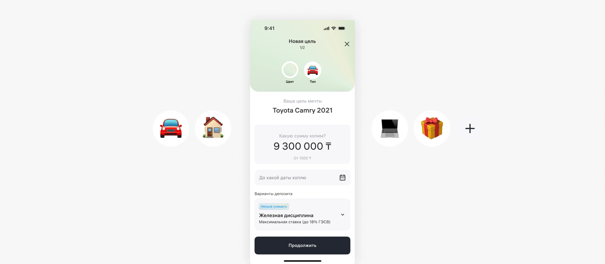
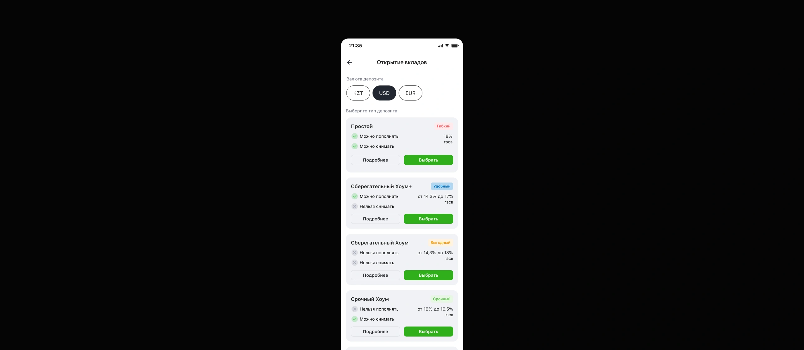
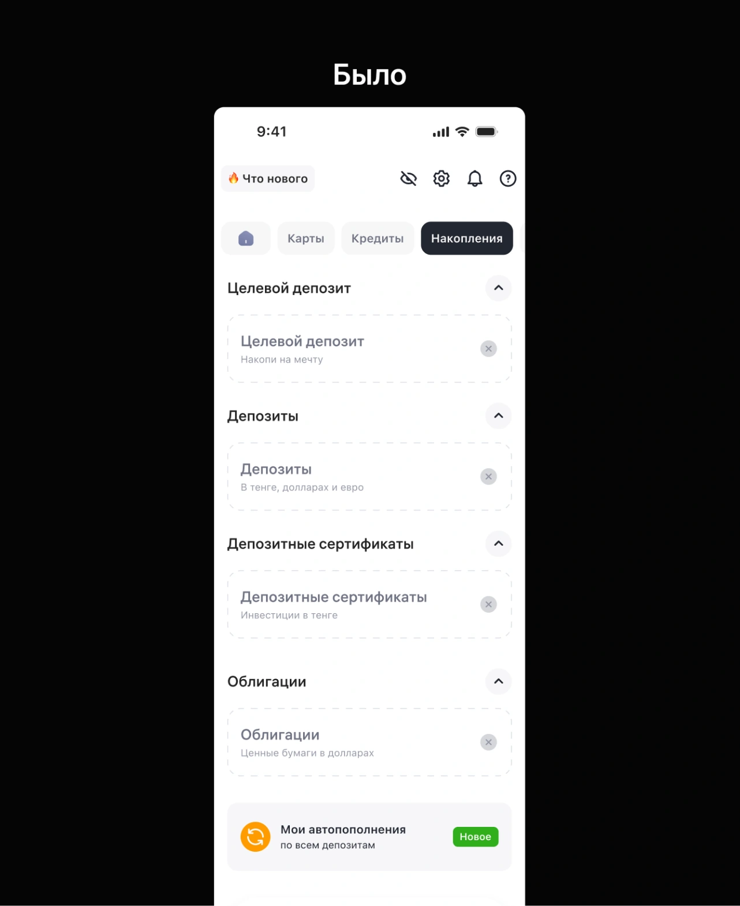
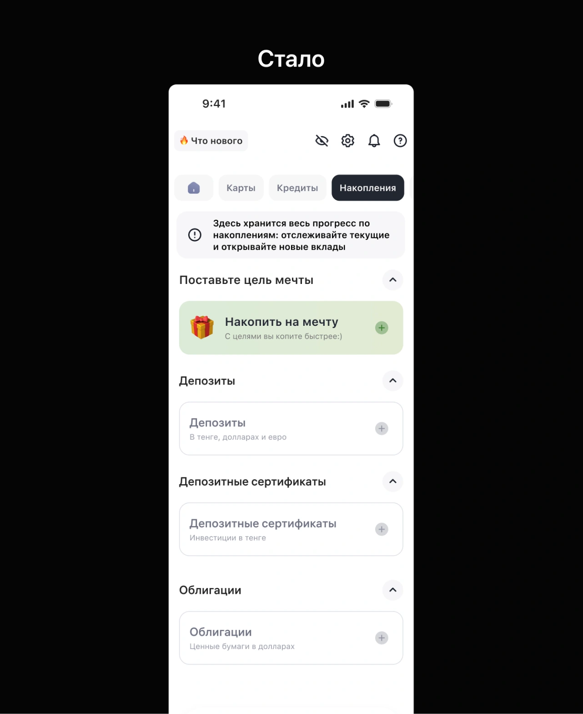
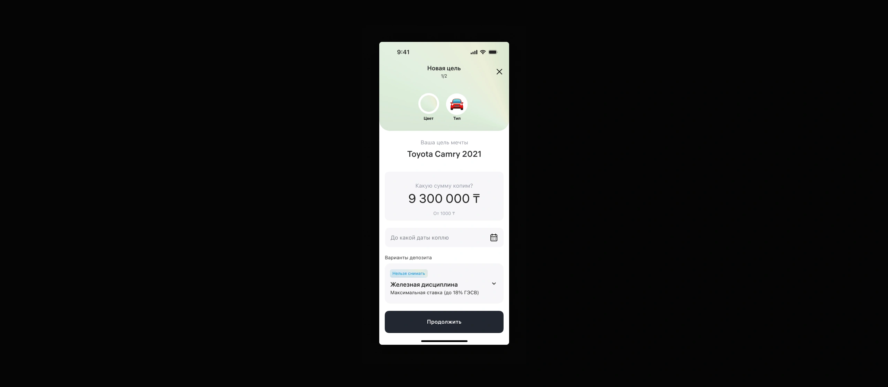
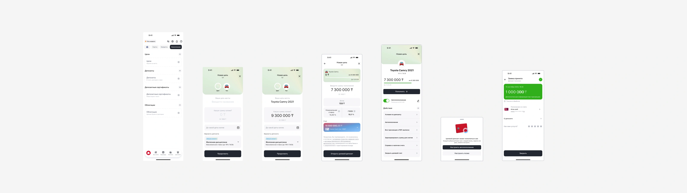

«Накопи на мечту» — фича, которая учит копить
Переосмыслила флоу открытия и управления депозитами и спроектировала механику целевых накоплений. За первые полтора месяца CR в открытие депозита вырос на 11%, средняя длина вклада — с 3 до 3,5 месяцев.

Команда депозитов пришла с запросом:
«Разработайте решение, влияющее на пользовательское поведение: стимулирующее накопление, снижающее частоту снятия средств и увеличивающее длительность депозитов»
Если перевести с продуктового: юзеры мало открывают депозиты, быстро их закрывают и не понимают, зачем они вообще нужны. В декабре депозит открыли всего 2854 человека, средний вклад жил 3 месяца.
Сначала поняла, где болит, а не где кажется
Я не стала сразу рисовать экраны. Собрала количественные данные о поведении юзеров из аналитики и качественную обратную связь по всем каналам — поддержка, отзывы, менеджеры. Из этого родились три гипотезы о том, почему люди не копят:
Дальше — что показала проверка каждой.
Думали, проблема в экране выбора. Оказалось — нет
По данным аналитики большое количество юзеров «застревало» на экране со списком депозитов и уходило. Классическая ловушка: цифры кричат, что проблема здесь, и рука тянется переделывать экран.
Вместо редизайна я провела серию телефонных интервью с юзерами, которые ушли с этой страницы. Выяснилось: они просто изучали варианты. Сравнивали условия, уходили подумать — и возвращались открывать вклад у нас или у конкурентов. Это нормальное поведение при выборе финансового продукта, а не затык в интерфейсе.
Экран не трогаем. Интервью на пару дней сэкономили недели разработки и уберегли от редизайна работающего флоу. Аналитика показывает, где уходят, но не почему.

Раздел «Накопления» понимают, но не до конца
Идея была в том, что юзер, увидев на главной вкладку «Накопления», перейдёт в неё и поймёт: это его пространство для накоплений, вот его польза и ценность.
Глубинные интервью показали: раздел считывается, но его ценность и устройство — нет. Юзеры не понимали, куда попали и что здесь можно делать.
Итерация №1: было → стало

Пустые карточки-«призраки», непонятная навигация, автопополнение без контекста.

Понятное пояснение раздела, выделенный основной продукт — цель мечты.
Из глубинок вытащила три инсайта и переработала раздел:
Юзеры не понимали «кнопки-призраки» — пустые карточки продуктов. Было неясно, что клик открывает новый продукт. → Отказалась от модели призраков, продукты больше не «исчезают».
Непонятно, куда попал. → Добавила пояснение, что это за раздел, и выделила основной продукт — цель мечты, чтобы он не терялся среди остальных.
Автопополнение в этом разделе вызывало вопросы. → Убрала его отсюда; позже переработаем точки входа и решим, нужна ли фича вообще.
Цель мечты повышает мотивацию копить
Ключевая ставка кейса: если юзер настраивает собственную цель — называет её, выбирает картинку, сумму и срок, — депозит перестаёт быть абстрактным банковским продуктом и становится «деньгами на машину». Это повышает ценность вклада и мотивацию копить вдолгую.
На юзертестах экран настройки цели оказался полностью понятен — и по механике, и по ценности. Юзеры без подсказок разобрались с кастомизацией: название, сумма, тип депозита, дата окончания цели.

Что получилось
+11% из целевых +35%
3 → 3,5 мес из целевых 6
первые сигналы «вау»
Куда движемся
Полный флоу фичи
Весь сценарий целиком, экран за экраном. Нажмите «Рассмотреть ближе», чтобы открыть флоу во весь экран.

Самым ценным решением кейса оказалось то, которое мы не сделали. Аналитика уверенно показывала «проблему» на экране выбора депозитов — и без интервью мы бы потратили месяцы на редизайн экрана, в котором не было проблемы. Данные говорят, где смотреть; люди говорят, что происходит.